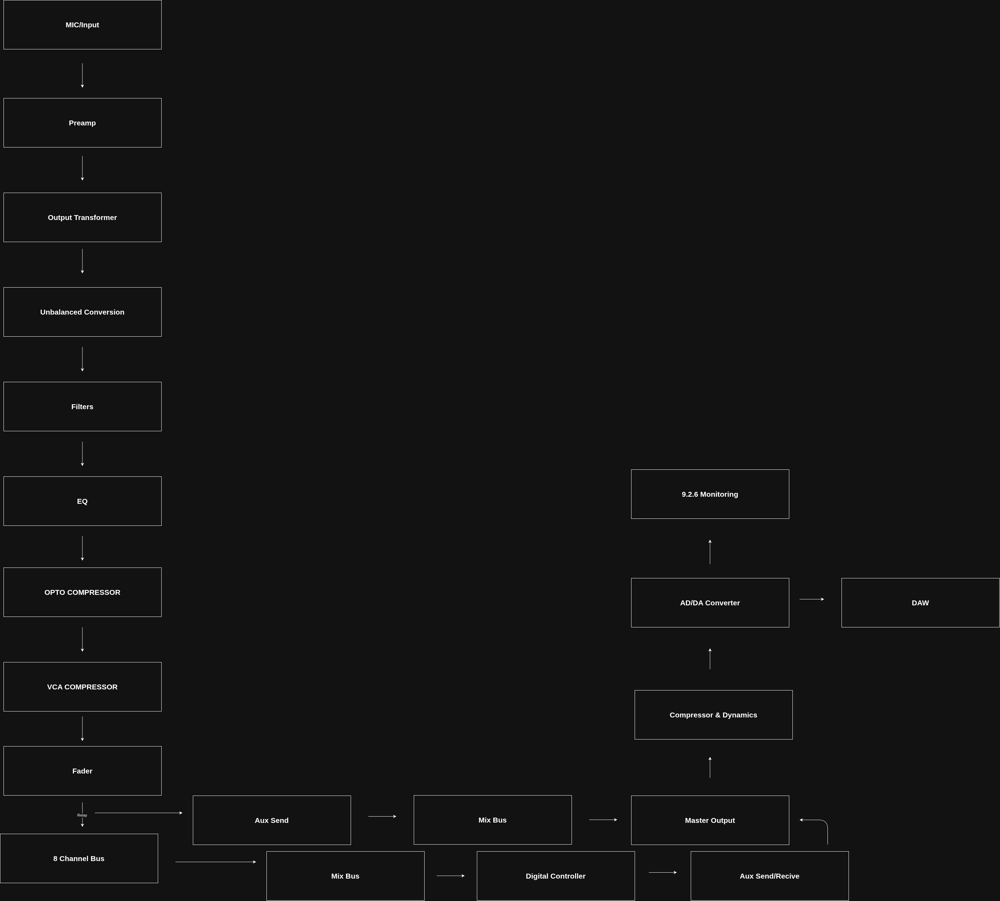

| Specification | Target |
|---|---|
| Input Channels | 48 (Expandable) |
| Mic Preamps | 48 |
| Line Inputs | 48 |
| Stereo Returns | 16 |
| AUX Sends | 16 |
| Sub Groups | 8 |
| Outputs | Stereo + Monitor |
| Sample Rates | 44.1-192 kHz |
| Bit Depth | 48 Bit (Max) - 24 Bit |
| Digital Interface | Optical + USB |
